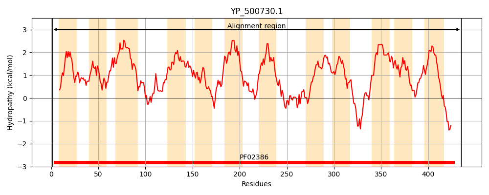
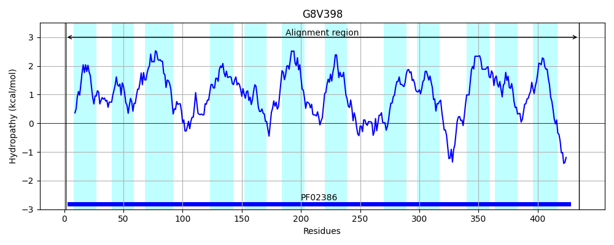
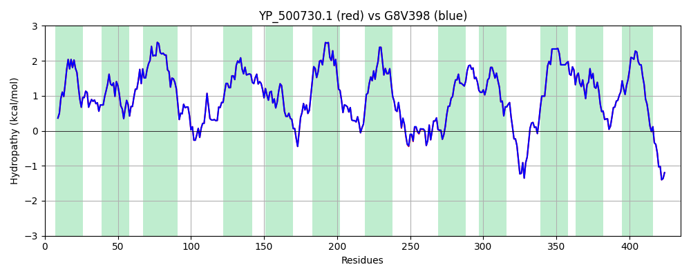

Hit Accession: G8V398
Hit TCID: 2.A.38.4.6
Hit Description: gnl|BL_ORD_ID|4877 gnl|TC-DB|G8V398|2.A.38.4.6 Ktr system potassium uptake protein B OS=Staphylococcus aureus subsp. aureus 11819-97 GN=ktrB PE=4 SV=1
Mach Len: 435
e:0.000000
Query TMS Count : 12
Hit TMS Count: 12
TMS-Overlap Score: 12.400000
Predicted Substrates:CHEBI:8345;potassium(1+)
BLAST Alignment:
Score: 2155 , Bit scores: 834 bits, E-value: 0.0e+00, Alignment length: 435, Percentage identity: 100
Query: 1 MNKVHKPLYFYLMLFFSTTIIGALLLYLPFTGKKPISFLDALFIASSAFTVTGLSPVDIGSQFNILGEIVILLLIQIGGLGIVTVTLLTLVFLNRKISMKNRFLIMVTWNIDEPGGVIKLIKHLAIYSLVTELIGMICLCLSFIPKFGIGKGLFLSLFTSVSAFNNAGFALFKNNLIDYSSDPIVIITISILIIFGGIGHFVVIDFINCKKLSKLSLHSKLVLTTTSILIIIGAITFFLLEQFNTMQHMGLVEKIGNSFFQSVTTRTAGFNSIDIASINKSTALMLMLLMFIGGAPLSAAGGIKITTFAVAFIFVLNYIRKENNVSVFNKEISDKHIKLSIVTINISFLFISIITFILSIINPNISLIKLLFEVVSAFGTVGLSMNLTTEYHGITKIIIIFVMLCGKVGLLTLLRTFIPPKSPKNYRYTKGQIYL 435
MNKVHKPLYFYLMLFFSTTIIGALLLYLPFTGKKPISFLDALFIASSAFTVTGLSPVDIGSQFNILGEIVILLLIQIGGLGIVTVTLLTLVFLNRKISMKNRFLIMVTWNIDEPGGVIKLIKHLAIYSLVTELIGMICLCLSFIPKFGIGKGLFLSLFTSVSAFNNAGFALFKNNLIDYSSDPIVIITISILIIFGGIGHFVVIDFINCKKLSKLSLHSKLVLTTTSILIIIGAITFFLLEQFNTMQHMGL+EKIGNSFFQSVTTRTAGFNSIDIASINKSTALMLMLLMFIGGAPLSAAGGIKITTFAVAFIFVLNYIRKENNVSVFNKEISDKHIKLSIVTINISFLFISIITFILSIINPNISLIKLLFEVVSAFGTVGLSMNLTTEYHGITKIIIIFVMLCGKVGLLTLLRTFIPPKSPKNYRYTKGQIYL
Sbjct: 1 MNKVHKPLYFYLMLFFSTTIIGALLLYLPFTGKKPISFLDALFIASSAFTVTGLSPVDIGSQFNILGEIVILLLIQIGGLGIVTVTLLTLVFLNRKISMKNRFLIMVTWNIDEPGGVIKLIKHLAIYSLVTELIGMICLCLSFIPKFGIGKGLFLSLFTSVSAFNNAGFALFKNNLIDYSSDPIVIITISILIIFGGIGHFVVIDFINCKKLSKLSLHSKLVLTTTSILIIIGAITFFLLEQFNTMQHMGLIEKIGNSFFQSVTTRTAGFNSIDIASINKSTALMLMLLMFIGGAPLSAAGGIKITTFAVAFIFVLNYIRKENNVSVFNKEISDKHIKLSIVTINISFLFISIITFILSIINPNISLIKLLFEVVSAFGTVGLSMNLTTEYHGITKIIIIFVMLCGKVGLLTLLRTFIPPKSPKNYRYTKGQIYL 435 | Protein Hydropathy Plots: |
|---|
|  |  |
Pairwise Alignment-Hydropathy Plot:
|
|---|
|  |